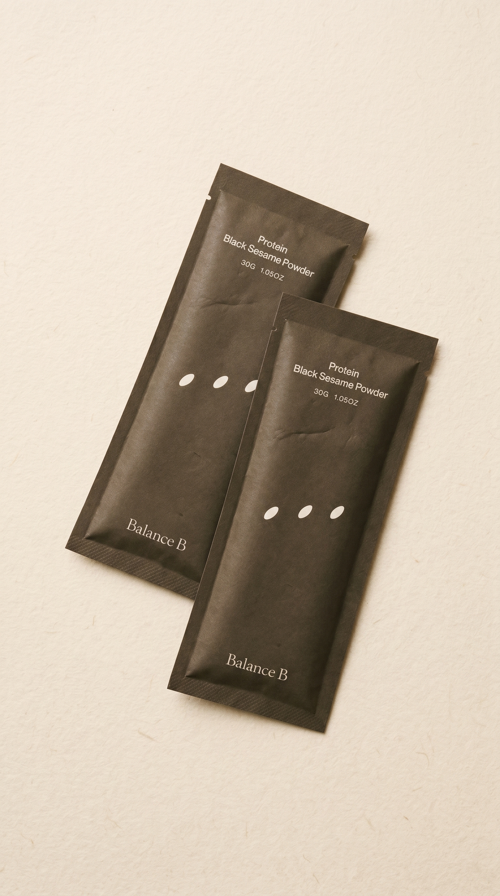
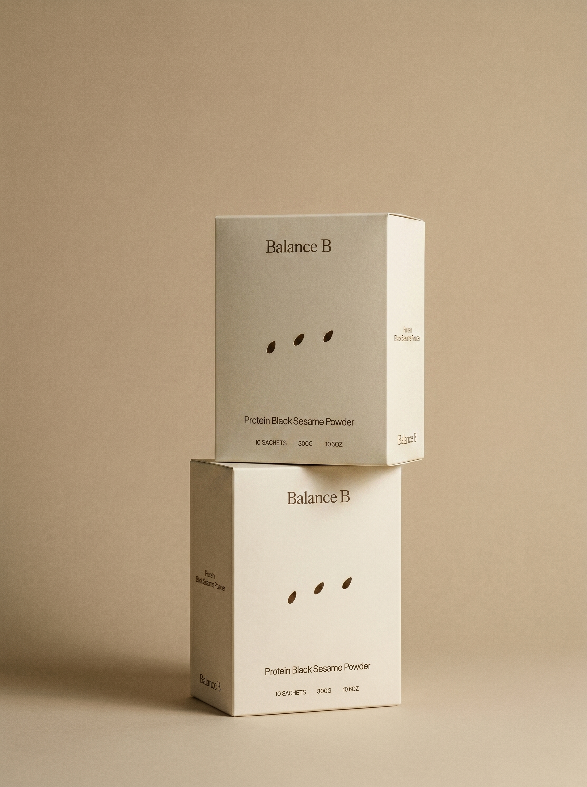
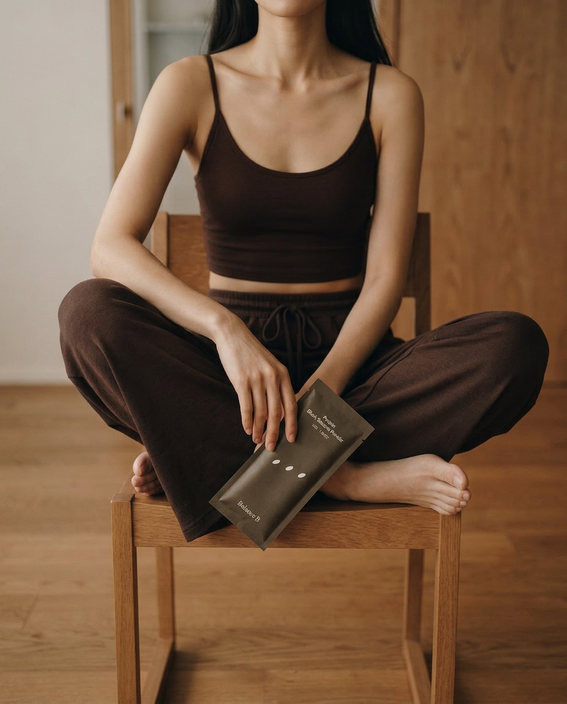
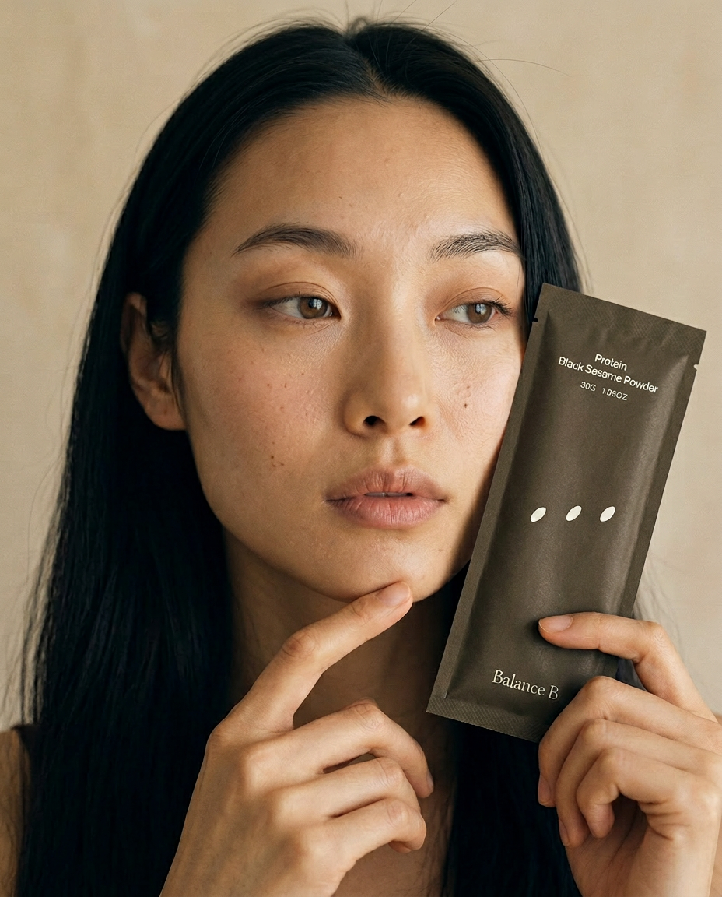

Branding
브랜드의 포지셔닝, 톤, 카테고리 언어를 정리해 식품 브랜드의 첫 인상을 또렷하게 세웁니다.
아이디어부터 출시, 운영까지. 식품 브랜드의 첫 문장과 매대 위의 장면을 한 호흡으로 연결합니다.
전략부터 패키지, 웹과 캠페인, 그리고 Brand OS까지. 식품 브랜드가 실제로 운영될 수 있는 구조를 만듭니다.
브랜드의 포지셔닝, 톤, 카테고리 언어를 정리해 식품 브랜드의 첫 인상을 또렷하게 세웁니다.
사쉐, 박스, 병, 상세 정보 구조까지 제품이 실제 매대 위에서 읽히는 방식을 설계합니다.
랜딩, 상세페이지, 전환 흐름을 정리해 브랜드가 온라인에서 같은 결로 이어지도록 만듭니다.
인스타그램, 시즌 캠페인, 운영 문장까지 확장해 출시 이후의 콘텐츠 리듬을 준비합니다.
브랜드의 첫 장면과 디지털 전개를 카드처럼 겹쳐 보여주며, KRK의 작업 결을 한눈에 읽을 수 있게 정리합니다.



인스타그램 피드와 랜딩페이지가 따로 놀지 않도록, 같은 톤의 이미지와 장면으로 브랜드 세계관을 이어갑니다.

노션 안의 운영 기준과 인스타그램 안의 반복 가능한 장면을 연결해, 브랜드가 매번 처음부터 다시 설명되지 않도록 만듭니다.
처음 대화에서 제품의 언어를 정하고, 패키지와 상세페이지, 운영 자산까지 한 번에 연결합니다.
브랜드가 어떤 카테고리의 어떤 순간에 선택되어야 하는지 먼저 정리합니다.
패키지, 상세페이지, 이미지, 문장을 같은 톤으로 설계해 브랜드의 첫 장면을 만듭니다.
Brand OS를 통해 인스타그램, 시즌 캠페인, 반복 문장을 운영 가능한 자산으로 연결합니다.